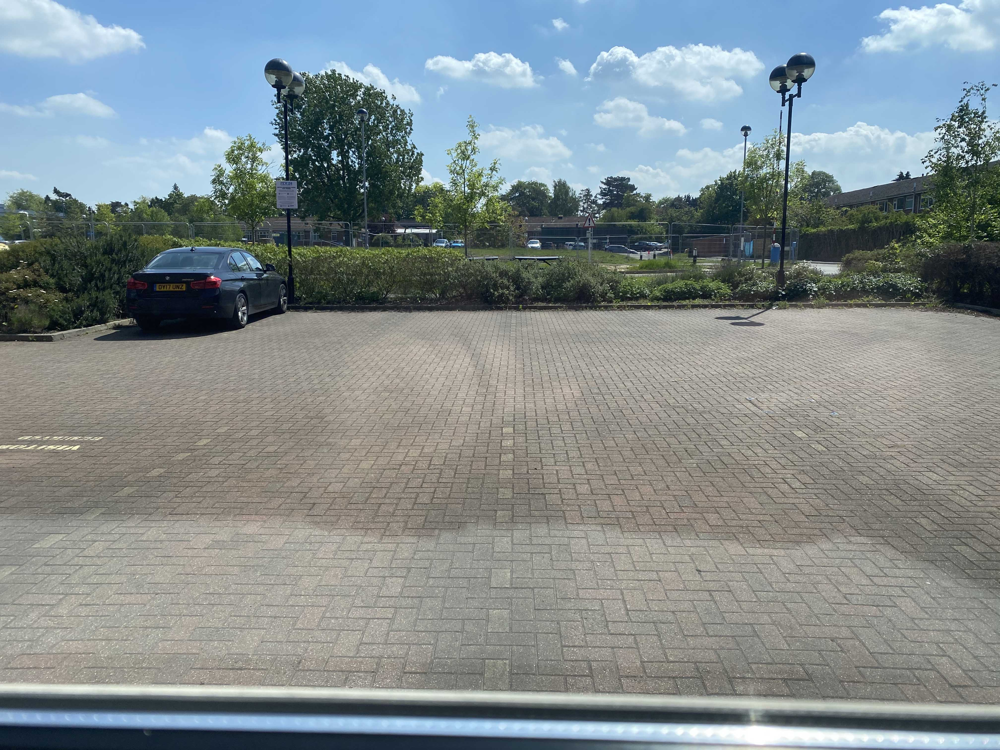

Like most people, iv been in lockdown now for about 8 weeks. This has allowed me to catch up on a lot of work that I have put off for quite a while. When im at work im contantly bombarded by requests for help from students and colleagues. This usually prevents me from doing work that I enjoy, but work that isnt always a high prioirty. For example, I have always had an ambition to write an CRAN R package to automate R Markdown website and reports. The lockdown has given me enough time to focus on this (see: Github ).
Overall, iv really enjoyed being in lockdown. Despite feeling down from time to time, iv been lucky that I have been able to be relatively productive and I have enjoyed the time to refocus my thoughts and work on projects that I wouldnt have usually been able to work on. However, while this work is important for my usual scientific work, it will not address any of the current Coronavirus crisis problems.
I, like most scientists have thought a lot about how our research pre-crisis could be relevant to the current crisis. Despite feeling that some of my work does have relevance to SARS-CoV2 work, iv been reluctant to do anything about it. One of the reason for my initial thinking was the shocking amount of really bad science that is being posted on BioRxiv (Although there is a lot of good stuff too!). Plus, our labs arnt really set up with the correct reagents to work on Coronavirus.
Beginning SARS-CoV-2 work
However, our lab was given the opportunity to contribute to the Univertsity of Oxford’s ongoing Coronavirus effort, albeit in a small way. This has resulted in our group purifying the viral spike protein that is being used for downstream drug screening efforts against COVID.
Above is a colleague purifying 15 mg of SARS-CoV2 spike protein
As a consequence of this project, we now have access to relevant SARS-CoV2 research reagents. These have allowed us to reavaluate how our pre-crisis research can be useful for the current crisis. Prior to the Coronavirus crisis, myself and a colleague, Dr Martin Philpott, had been working to develop novel cost-effective single-cell sequencing analysis tools. These tools allow scientists to measure the RNA (the cells message molecule that instructs a cell to create a certain protein) levels within a single cell. Repurposing this technology, we have a hopefully come up with a potential way of also measuring the viral load of the SARS-CoV2 at the same time as RNA within a single-cell. Therefore, you can directly measure a cells response to the viral infection.
How could this be useful?
Being able to measure the viral load within each single-cell would be a very valuable research tool for Coronavirus researchers. This is because you could quantify the numbers of cells that are infected by the virus. Moreover, you can then measure how the virus changes the cells RNA and ultimately its function. For example, if you take a sample from a patient with COVID then you could identify which types of cells are preferentially infected by SARS-CoV2. Then you could potentially identify drugs that target these particular cell types.
Will it work
As a consequence of our plans for this new assay, I have been allowed us back into the research lab, which has been closed off for the 8 weeks we have been in lockdown. Myself and Martin were given special permission to return to the lab to see if our assay will work. Returning to the Research Institute has been a very strange feeling. Usually the institute if a hive of activity and there is usually always someone around, even in the late evenings. However, silence has decended and the only noises are from the hum of lab equipment.
Despite these eerie working conditions, we have begun our initial preparation work for developing this assay. Today we conducted our first experiment which worked well . However, the reagents we need to complete this work are on currently stuck in Customs. Despite this, like all scientific research, there is no guarentee that this assy will work. On the whiteboard, Martin and I have tried to destroy each others ideas until all the potential problems we can think of are identified. Ultimately on paper we think it will work, but only time will tell. Because of the acute need for tools like ours, we are trying to speed the development process up. However, the only thing that is holding things up at the moment is the delivery system. A lot of our reagent shippments from Europe keep getting stuck in Customs. I think this highlights how interdependent the world is and how when crises happen, simple things can impede scientific propgress, such as the delivery of reagents. Hopefully these things will iron themselves out soon. Fingers crossed. I will let you know how it all goes.
The institute in lockdown
Pictures that I took of the research institute during the lockdown:
